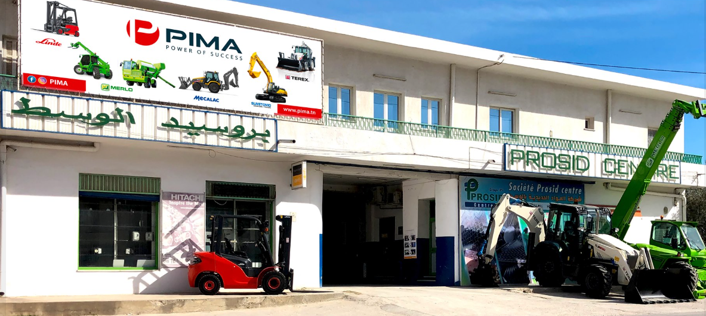

Qui
sommes
nous
!
Fondée en 1993 et implantée au Sahel, au gouvernorat de Monastir. Prosid Centre est une société commerciale spécialisée dans la vente de produits sidérurgiques.
Nous proposons une large gamme de produits, notamment des tôles, tubes, aciers spéciaux, laiton, acier, polyamide, et bien plus encore.
Avec plus de 30 ans d’expérience, nous mettons notre expertise au service de vos projets industriels.
Grâce à l’engagement de nos équipes, la réactivité de notre service, nos infrastructures de stockage et notre parc de véhicules pour les livraisons, nous vous garantissons des approvisionnements en aciers fiables, sûrs et réguliers, dans une relation de partenariat solide.
Contactez-nous pour découvrir toutes nos gammes de produits !

 Mail:
saoussen nasr ,
Ali saidane
Mail:
saoussen nasr ,
Ali saidane